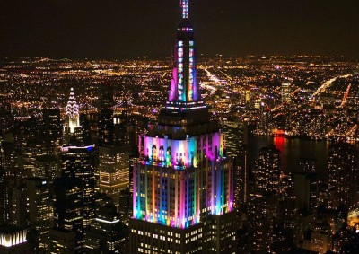
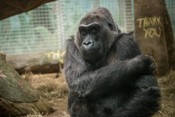
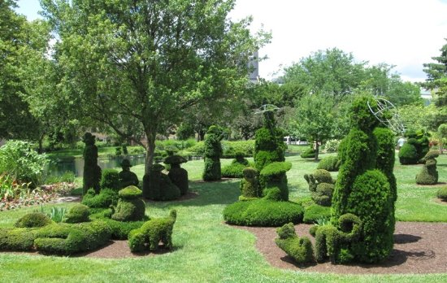

|
| Some of the greatest memories I had was with family.
One of my greatest memory was when my family and I went to New York City and we went to times Square and it was so chaotic.
When we walked through downtown there were so many people and some people were crowding around a performer who was dancing.
Then there were protestors and there were so many tall buildings.
The hotel we stayed at overlooked most of the city and the view at night was too good.
We then went on a cruise to see the statue of liberty and at night we went to see the empire state building and the view was awesome.
Then we went on a tour bus around Manhattan, Brooklyn, and Bronx.
We stayed there for about a week and those were some of the greatest days of my life.
Another one of my great memories was when my family and I went to Columbus and Cleveland and we went to one of the greatest zoos in the world.
The Columbus Zoo and Aquarium (it has a waterpark!!) is the greatest zoo I have ever been to.
Unfortunately, the waterpark was closed but the zoo was that good it covers up for the waterpark.
I also went to the Columbus botanical gardens and I went to the Topiary Park.
The topiary park is 9.2 acres, and it is so pleasant and elegant.
The grass is the softest grass my feet have ever touched. Those are 2 of my greatest memories ever. |